A la source logique de la notion d'ensemble : la compréhension et l'étendue d'une notion
Au XIXè : théorie des ensembles (Cantor par exemple) : reconstruire de manière unifiée l’ensemble des mathématiques. Au début du XXè : paradoxes ensemblistes : crise des fondements. Plusieurs théories sont sorties de cette crise, notamment l’axiomatique de Zermelo-Fraenkel. Le cours porte sur la théorie des ensembles jusqu’à avant la crise des fondements.
Distinction étendue / compréhension dans le domaine des notions et leurs relations
L’étendue d’une notion N est la donnée de toutes les notions auxquelles la notion N peut être attribuée.
La compréhension d’une notion N est la donnée de toutes les notions qui peuvent être attribués à la notion N.
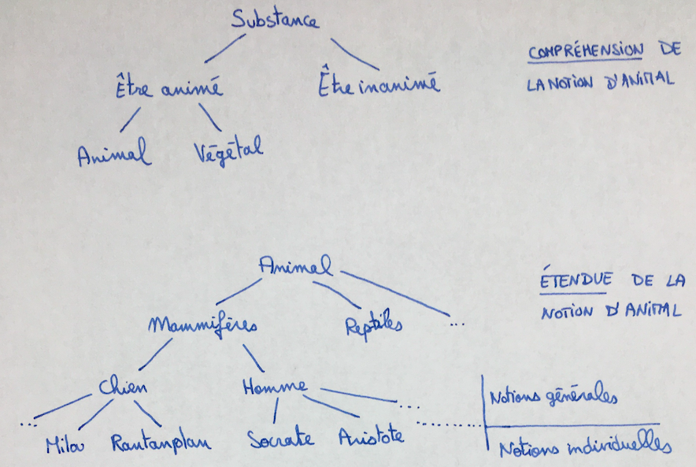
Mais existe-t-il des notions individuelles ? L’individu est-il pleinement intelligible ?
La méthode dichotomique pour construire les arbres de Porphyre ne contient que des embranchements à deux branches.
Pour XX il n’existe pas de forme individuelle. C’est la matière sensible qui individue les substances, c’est le substrat des accidents individuels.
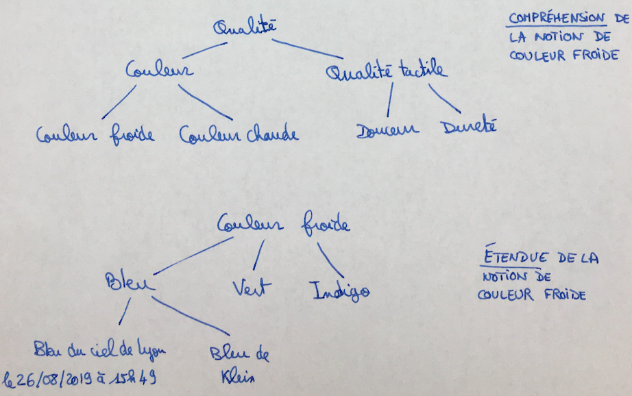
Loi de réciprocité de l’étendue et de la compréhension. En remontant dans l’arbre la compréhension diminue et l’étendue augmente, et en descendant c’est l’inverse. Que se passe-t-il au sommet et en bas de l’arbre ?
Il existe une notion au sommet : l’être. Sa compréhension est vide (rien ne se dit de l’être autre que l’être lui-même).
Pour Aristote il existe plusieurs notions au sommet, ce sont les catégories, des notions d’étendue maximale et de compréhension minimale. Par exemple la substance, la quantité, la possession, l’action.
Existe-t-il des notions individuelles en bas de l’arbre ? Ou ce sont les « espèces dernières », assez précises pour n’avoir aucune étendue ?
Distinction étendue / compréhension dans le domaine de la notion de proposition
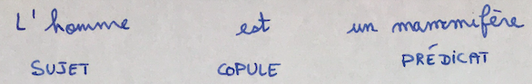
Une proposition négative sépare le prédicat du sujet.
La vérité de S est P : 1/ l’étendue de la notion de S est inclue dans l’étendue de la notion de P ou 2/ la compréhension de P est inclue dans la compréhension de S.
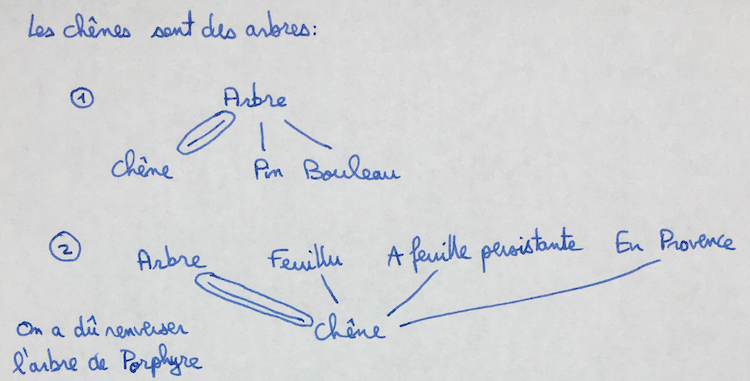
Déplacement de cette distinction : l'intension et l'extension
L’étendue / compréhension désignent la position d’une notion par rapport à l’ensemble de l’univers. Quel est le minimum à donner pour caractériser la « position logique » d’une notion ?
L’intension est la compréhension définie de la manière suivante : la compréhension d’une notion N, au sens strict, est un ensemble de propriétés caractéristiques qui, jointes ensembles sous la forme d’une définition, fournissent une condition nécessaire et suffisante pour qu’un individu tombe sous cette notion. L’intension correspond à une logique des notions.
Par exemple : pour « homme », on se limitera à la compréhension « animal » + « rationnel », inutile de remonter à « être », « substance »…
Pour l’étendue, on s’inspire de Leibniz. Comme il est arbitraire de désigner ce qu’il y a juste en-dessous de l’arbre (de « nombre » on peut passer à « nombre pair » + « nombre impair » ou à « nombre premier » + « nombre composé » par exemple), on appelle extension l’étendue définie de la manière suivante :
On appelle l’étendue d’une notion, dans un sens restreint, la donnée de tous les individus auxquels cette notion s’applique. C’est une logique des individus.
La réciprocité des logiques intensionnelle et extensionnelle en question : la logique leibnizienne des notions
Si on dit que « tout rieur est homme », peut-on dire que « quelque homme est rieur » ?
Non strictement, car imaginons qu’à l’instant t personne ne rit, ou que l’humanité ait été décimée par un cataclysme. Cette réciproque est vraie à condition de se référer à des « hommes possibles » et à des « rieurs possibles ». La logique des individus (extensionnelle) va plutôt à l’encontre de celle d’Aristote. Les lois de la syllogistique, d’une manière générale quand elles sont interprétées en extension, peuvent poser problème sitôt qu’il est permis que certaines notions n’aient aucune extension, c’est-à-dire ne soient applicables à aucun individu.
Notation de Leibniz
A = homme ; B = animal ; C = rationnel ; ∞ = égalité ; . = produit logique
A∞B.C
Une espère animale, sans dire laquelle : B.X (B est ici un prédicat qui définit la notion B).
Règles :
Si on veut garder une réciprocité parfaite entre intension et extension, il faut accepter le fait que l’extension est la collection des individus possibles tombant sous la notion. On ne peut connaître parfaitement les prédicats qui composent l’individu César. C’est une notion contingente dont l’infini n’est connu qu’en Dieu.
Vers l'acceptation d'un saut ontologique entre intension et extension : sens et dénotation de Frege
Pour Frege, l’extension d’un concept (= notion) n’est pas nécessairement encore un concept ou une structure arborescente de concepts ni même une collection de concepts individuels comme le dit Leibniz, c’est un ensemble d’objets. (/!\ un objet est ontologiquement différent d’un concept).
Le sens d’un concept est défini par la façon dont il est donné au sein de la proposition. La façon dont une expression décrit les objets tombant sous un concept est le sens.
Sens / dénotation ne s’appliquent pas tant aux concepts qu’aux expressions linguistiques qui les désignent.
La dénotation d’une expression est la portion du monde qu’elle désigne (« actuel président français » pour E. Macron). Le sens d’une expression correspond à la façon dont cette expression renvoie à sa dénotation (ex. « l’étoile du soir » et « l’étoile du matin » renvoient à la même dénotation (planète Vénus), mais pas de la même manière).
Deux expressions de même sens ont une même dénotation.
Dépendance de la dénotation à l’égard du contenu du monde. Ex. « l’actuel président français » changera de dénotation dans 10 ans. Le sens est affaire purement interne au langage. La dénotation a à voir avec la dimension sémantique du langage.
Si dans l’expression « Le coquelicot est rouge », on enlève « le coquelicot », on obtient P(_) le prédicat « _est rouge ». C’est une expression insaturée, on peut affecter le prédicat à P(sang), P(coquelicot).
Un prédicat n’a pas pour dénotation un objet mais un concept.
Quelle différence entre intension / extension et sens / dénotation ?
Dénotation : individus possibles comme membres de l’extension de la notion. Mais que faut-il associer, chez Frege, à l’intension ? Peut-être le sens mais Frege insiste sur la multiplicité des façons de se donner un objet auquel on se réfère. Alors que chez Aristote par exemple il y a une seule définition de l’homme. L’équivalent frégéen de l’intension est plutôt le concept. Mais les concepts comme les individus ne sont pas du côté du sens mais de la dénotation. Plusieurs expressions mathématiques peuvent dénoter le même objet alors qu’elles ont des sens différents. Il y a un saut ontologique du sens à la dénotation.
Deux sens d’attribution d’une notion (ou d’un prédicat) :
Aristote n’avait pas bien cerné cette distinction. Il attribuait une primauté de l’attribution aux individus par rapport à l’attribution aux espèces. C’était une primauté d’ordre ontologique.
Dans une attribution distributive, chacun des individus possède la propriété (ex. « l’homme est bipède » ne veut pas dire que l’humanité possède deux jambes mais que tous les individus homme ont deux jambes).
Dans une attribution directe : « Platon est bipède », primauté logique de l’attribution directe. L’attribution distributive n’a de sens que parce que l’attribution directe en est pourvue.
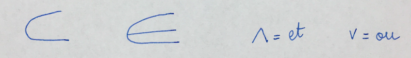
Il existe des prédicats qui s’appliquent à des ensembles (ex. être une espère rare. Cela ne veut pas dire que chaque panda individuellement est rare).
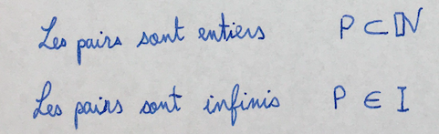
Caractérisation générale de la notion d'ensemble : quel type de collection est opéré par un ensemble ?
Dans une liste les éléments sont ordonnés et peuvent se répéter. Dans une hiérarchie en général les éléments ne se répètent pas.
L’ensemble est dans une relation d’appartenance avec ses éléments. Ceux-ci ne sont pas des ensembles mais des individus.
De l'usage mathématique de la notion d'ensemble à la notion mathématique d'ensemble (théorie des ensembles)
La notion d’ensemble en mathématiques peut s’appliquer à :
Fin XVII (Leibniz et Newton) : mathématiques du continu : toute la gamme des courbes possibles. Pour l’étude de la nature on a besoin de courbes continues => atteinte de l’état mature des mathématiques du continu au XIX.
√2 par exemple peut être approché par une suite de nombres décimaux : 1 ; 1,4 ; 1,41… Les nombres réels sont ainsi vus comme des ensembles de fractions.
Une fonction est une corrélation reliant les éléments d’un ensemble aux éléments d’un autre. La notion d’ensemble a permis d’unifier l’ensemble des mathématiques.
Au XIX on se pose la question si on peut :
- caractériser l’ensemble des corrélations possibles (fonctions) par l’ensemble des prédicats mathématiques relationnels possibles.
- ou si on doit plutôt qu’un ensemble puisse exister indépendamment d’un prédicat dont il serait l’extension.
C’est la question de l’indépendance de l’ensemble par rapport à sa construction logique). Cantor le détaille au XIX dans sa théorie des ensembles. Il découvre qu’il existe une infinité d’infinis différents entre lesquels on construit des relations complexes. Cantor développe une théorie des nombres transfinis et franchit l’interdit aristotélicien qui voulait que l’infini n’existe qu’en puissance et non en acte. Ce sont des interrogations nouvelles pour la philosophie : quelle est la place de l’infini dans la connaissance ? Puis l’arrivée des paradoxes de la théorie des ensembles a suscité une crise des mathématiques.
Plusieurs problématiques ont été mises en évidence avec ces réflexions sur les ensembles :
Lien entre théorie des ensembles et domaine de la logique.
Caractère formel de la notion d’ensemble (ne regarde pas la nature mais la forme commune d’objets très différents). Analyse des structures internes aux propositions, structures s’expriment par des objets, prédicats… indépendamment du fait que ces objets viennent de l’arithmétique ou de la géométrie.
Caractère opératoire
Ces deux caractères permettent d’exporter dans la théorie des ensembles les questions de la philosophie logique concernant les lois formelles : 1/ les lois qui régissent l’univers sont-elles des lois de la pensée ? 2/ ou imposées par l’extérieur ? 3/ l’univers des ensembles est-il un choix arbitraire ?
Les opérations ensemblistes
L'union
Permet de respecter le principe d'extensionalité et de lister tous les éléments de AUB : ça définit bien un ensemble. 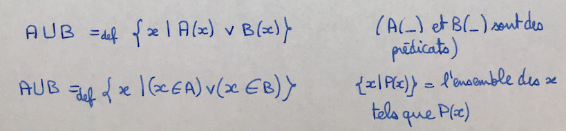
L'intersection
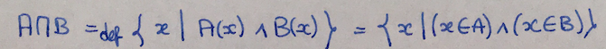Ensemble vide
Il existe un (et un seul ensemble) ne contenant aucun élément. 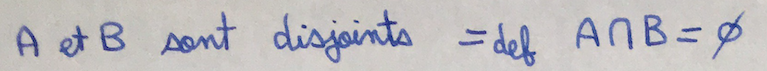
La complémentarité
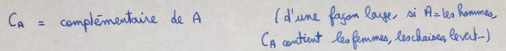
Les lois formelles ensemblistes
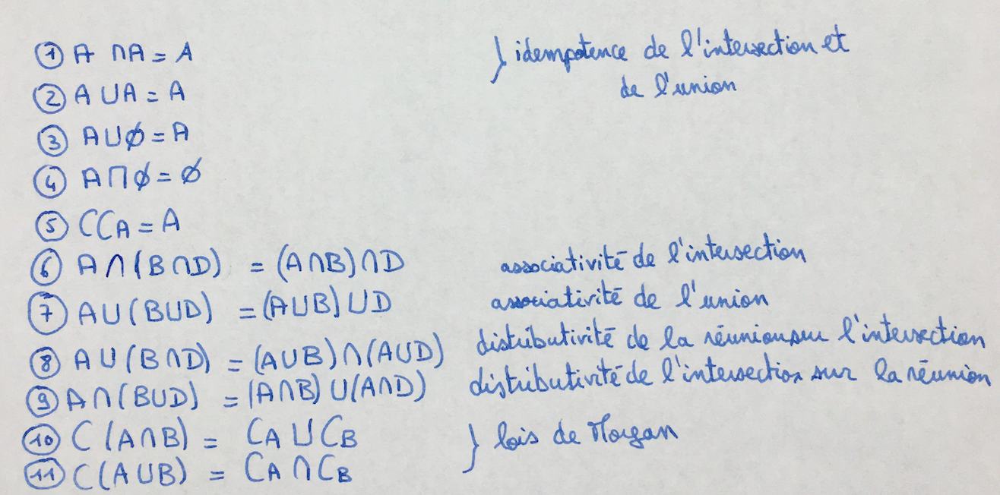Conclusion sur les rapports entre la théorie (naïve) des ensembles, le calcul des propositions et le calcul des prédicats
On passe des connecteurs prépositionnels aux connecteurs ensemblistes en faisant un passage de l'intension à l'extension, par le biais de la relation d'appartenance et de l'opérateur abstracteur. On obtient une intersection ensembliste là où, au niveau intensionnel, on avait une disjonction de propriétés.
Le carré aristotelicien : universelle affirmative, universelle négative, particulière affirmative et particulière négative.
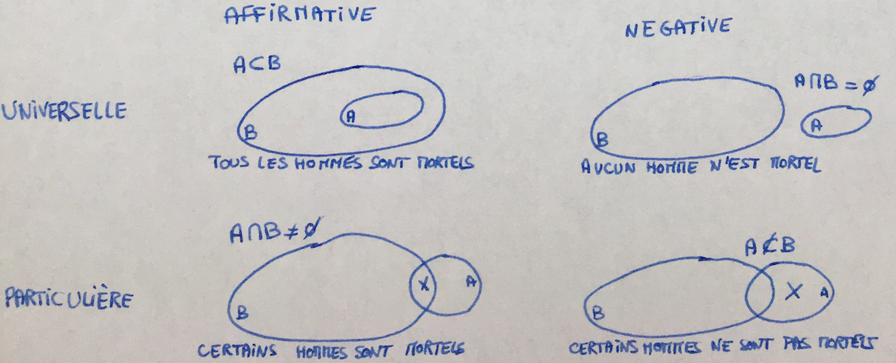
Retour à l'accueil des fiches philo
Retour à l'accueil général